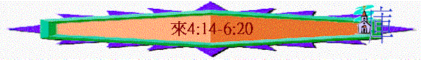

|
超越的信仰 |
||||||
|
認識基督之超越(1-10:18) |
活出信心的表現(10:19-13:25) |
|||||
|
使者 |
首領 |
祭司 |
表現 |
見証 |
路程 |
生活 |
一.認識基督之超越(1-10:18)
3.更美的祭司(4:14-10:18)
〜3-4章題及作者勸勉信徒要將信仰堅持到底，但當他們在信仰路上，遇到困難，自己也有軟弱(甚至犯罪得罪神，不敢朝見神)，怎辦呢？
〜4-10章題及耶穌是更美的祭司，祂有能力幫助軟弱的人，人靠祂只管坦然來到神前得幫助。
A.肯定----基督是能幫助信徒的大祭司(4:14-16)
a.持定道的勸勉
「我們既然有一位已經升入高天尊榮的大祭司，就是神的兒子耶穌，便當持定所承認的道。」4:14
b.得幫助的源頭----大祭司
(1)尊貴者
「已經升入高天尊榮的大祭司……」
〜主是「大祭司」，比人間祭司更尊貴，是升入高天的，祂是滿有權柄、地位超然的，所以勝過地上執政掌柄的，信徒跟隨祂，也可不懼怕地上有權而逼害信徒的人。
(2)體恤者
「因我們的大祭司並非不能體恤我們的軟弱。他也曾凡事受過試探，與我們一樣，只是他沒有犯罪。」4:15
〜祂曾經成為人，能體恤我們的軟弱
(3)完全者
〜但祂卻沒有犯罪，唯有完全的人才能使我們勝過罪惡，進入完全。
(4)引導者
「所以，我們只管坦然無懼的來到施恩的寶座前，為要得憐恤，蒙恩惠，作隨時的幫助。」4:16
〜軟弱的人，可以坦然來到神面前，是因為主是大祭司，祂是中保，有能力引導我們來到父神前(已開了一條又新又活之路)，得神憐恤與幫助(下文會有更詳細解釋)
B.解釋----為何基督能夠幫助信徒(5:1-10:18)
a.祂合乎資格(5:1-10)
(1)人間的祭司
(A)主要工作
「凡從人間挑選的大祭司，是奉派替人辦理屬神的事，為要獻上禮物和贖罪祭（或作：要為罪獻上禮物和祭物）。」5:1
(a)代人伺神
〜昔日的祭司----是利未人，代替其餘支派在會幕中服事神
(b)獻上祭物
〜而代人的主要工作是獻上禮物和贖罪祭，為人贖罪。
(B)基本資格
「這大祭司的尊榮，沒有人自取。惟要蒙神所召，像亞倫一樣。」5:4
〜是神所召，不是自召，唯有神所揀選的亞倫後裔才能為大祭司
(C)也有局限
「他能體諒那愚蒙的和失迷的人，因為他自己也是被軟弱所困。故此，他理當為百姓和自己獻祭贖罪。」5:2-3
〜「愚蒙」指人的無知，人在無知中犯罪，也在無知中敬拜自己所造的偶像；「失迷」指人走錯路，不入正途，反在罪中迷失正確的方向，這都是罪。
〜人間的大祭司可能體諒人的軟弱，因為他自己有局限，被軟弱所困，所以也要為自己獻祭贖罪。
(2)超越的祭司
(A)合乎資格
「如此，基督也不是自取榮耀作大祭司，乃是在乎向他說「你是我的兒子，我今日生你」的那一位；就如經上又有一處說：「你是照著麥基洗德的等次永遠為祭司。」」5:5-6
〜基督也不是自取為大祭司，詩110更預表基督是照麥基洗德的等次成祭司，是神所肯定的，合乎資格。
(B)更加完全
「基督在肉體的時候，既大聲哀哭，流淚禱告，懇求那能救他免死的主，就因他的虔誠蒙了應允。他雖然為兒子，還是因所受的苦難學了順從。」5:7-8
(a)人性
〜耶穌在世時，祂有人性一面，在客西馬尼園中會哀求、流淚、禱告，而「那能救祂免死的主」重點是神可以有能力免去祂死亡，但主仍然說「然而不要照我的意思，只要照的意思」，這是祂祈求的主要方向----照父神的意思。
(b)虔誠
〜虔誠是指對神誠心，有敬虔及尊重的心，從耶穌的祈禱----「不要照我的意思」就能反映，而父神真是聽了祂的祈求，照神的意思，讓主行上十字架路。
(c)順從
〜主在天上，跟本不能學習到順服至死及順服主苦難的心性最高的優美一面，因天上沒有死亡及苦難，但主在地上成為人，祂可以在受苦中仍順服，在面對死亡中也踏上父神的路，祂真正學成在任何情況下順服美好的一面。
(d)完全
「他既得以完全，就為凡順從他的人成了永遠得救的根源、」5:9
〜所以主真是完全的人，一生可順服，也從沒犯罪。
(e)根源
＊得救的根源
主順服至死，成就了救恩，所以他是得救的根源
＊得勝的盼望
主在世可以勝過罪惡，進入完全地步，也成為我們的盼望，可以效法祂跟隨祂，學習順服與完全。
b.引伸的勸勉(5:11-6:20)
(1)勸勉的引發
「並蒙神照著麥基洗德的等次稱他為大祭司。論到麥基洗德，我們有好些話，並且難以解明，因為你們聽不進去。」5:10-11
〜當作者想用「麥基洗德」來講及基督的超越(7章內容)，就引發他想起信徒的光景，而作出勸勉。
(2)勸勉的原因----仍停留嬰孩的地步
「凡只能吃奶的都不熟練仁義的道理，因為他是嬰孩；」5:13
〜信徒靈性似乎停滯，沒有成長，所以仍留在嬰孩初淺地步，而引伸他們有以下情況。
(A)聽不進去
「論到麥基洗德，我們有好些話，並且難以解明，因為你們聽不進去。」5:11
〜對於稍為深的真理，他們聽不入，所以也難解明。
(B)學得不好
「看你們學習的工夫，本該作師傅，誰知還得有人將神聖言小學的開端另教導你們，並且成了那必須吃奶，不能吃乾糧的人。」5:12
〜「小學的開端」----基本的道理，他們也學得不好，所以再另外教導。
(C)惡性循環
(a)不吃乾糧
〜因為靈性停滯，所以養成一個習慣，只吃奶，也感覺自己沒力吸收一些較深的道理，只倚賴停留在容易吸收初淺小學的開端中。
(b)不熟練道
〜由於長期的停滯，嬰孩也沒成長，對道理也不熟練(unskilled/inexperienced)沒操練，沒行出來。
(D)可以更好
「惟獨長大成人的才能吃乾糧；他們的心竅習練得通達，就能分辨好歹了。」5:14
〜但信徒若發奮努力成長，可以有一日吃乾糧，吸收深奧之真理，經過不斷實習，心竅(sense)----裏面領悟真理的感覺也通也明，更能分辦好歹是非了！
(3)勸勉的內容
(A)進到完全
「所以，我們應當離開基督道理的開端，竭力進到完全的地步，不必再立根基，就如那懊悔死行，信靠神、各樣洗禮、按手之禮、死人復活，以及永遠審判各等教訓。神若許我們，我們必如此行。」6:1-3
(a)離開道理開端
〜一個跑手要進到更高更遠的地步，他需要離開，不可以時常覺得自己不能，根基已立好了。
＊與神關係的根基----懊悔死行(因犯罪的行為帶來死)，信靠神。
＊教會禮儀的根基----各樣洗禮、按手之禮(按手代表差遣，或求神將恩賜能力給與被按之人)
＊將來來世的根基----死人復活及永遠審判
(b)竭力進到完全
〜要成長，需竭力，竭力學習真道，並且努力實踐，行在生活中，在苦難中也竭力學習順服，當人肯將知識化為行動，已邁向完全的光景了！
〜當然我們要神許可我們有生命氣息，有了信仰基礎，若有，信徒必要如此行。
(B)勿離真道
〜一個跑手除了要離開開端外，他也要在指定的跑道上跑，不能離開，若離開，必被取消資格，信徒走天路也不例外。
(a)離開的人群
「論到那些已經蒙了光照、嘗過天恩的滋味、又於聖靈有分，並嘗過神善道的滋味、覺悟來世權能的人。」6:4-5
「親愛的弟兄們，我們雖是這樣說，卻深信你們的行為強過這些，而且近乎得救。」6:9
〜之前講及「我們」，6:4題到「那些……人」，6:9題及你們強過這些，明顯那些人不是信徒(我們)，他們似乎也有聚會，表面像基督徒，也有類似經歷。
＊蒙了光照
可能也和信徒一樣，被神道光照，知道自己的路是錯的。
＊嘗過天恩
可能也和信徒一樣，感受到神的思(例如神聽禱告，賜人有生命氣息)
＊聖靈有份
「有分」有同伴(companions)意思，也見過信徒因聖靈而來的能力、言語、醫治，也感受到(但內裏仍未有聖靈住在內心，沒有聖靈的印記)。
＊嘗過善道
也聽過神的道，可能也歡喜領受
＊覺悟來世
也知神將來要審判世人
(b)離開的惡果
＊不能懊悔
「若是離棄道理，就不能叫他們從新懊悔了。因為他們把神的兒子重釘十字架，明明的羞辱他。」6:6
〜他們是有知識，知到真理，也經歷神恩，但至終決定離開，証明他們的心是何等剛硬，所以也難懊悔。
〜而將「神兒子重釘十字架」意思是他們如昔日的猶太人一樣，抗拒耶穌，將主釘在十字架上。
＊結局悲哀
「就如一塊田地，吃過屢次下的雨水，生長菜蔬，合乎耕種的人用，就從神得福；若長荊棘和蒺藜，必被廢棄，近於咒詛，結局就是焚燒。」6:7-8
〜至終被廢棄，結果如焚燒(在地獄中)
(C)持定指望
「我們願你們各人都顯出這樣的殷勤，使你們有滿足的指望，一直到底。」6:11
〜跑手要跑得好，除了要離開起點，跑在當跑的路中，也要清楚自己的至終目標(指望)，朝著目標不放棄地跑下去，信徒在天路中也要持定神給的指望，原因如下：
(a)有得救的確據
「親愛的弟兄們，我們雖是這樣說，卻深信你們的行為強過這些，而且近乎得救。因為神並非不公義，竟忘記你們所做的工和你們為他名所顯的愛心，就是先前伺候聖徒，如今還是伺候。」6:9-10
〜前文那些人終不能得救，但信徒卻不是沒有指望，因作者深信他們「近乎得救」(原文直譯：〝having
salvation〞得恩)，他們是真正得恩的人，從他們的表現，過往所作的工，所顯的愛心，就証明他們真正被聖靈改變，有新生命，有信心的人，所以信徒是有盼望的，不是持守落空的事，而是實在的盼望，當人越努力持守所信，所盼望的，他內心更會因著指望得著榮耀與滿足，也更深體會指望的實在及豐富。
(b)有效法的對象
「並且不懈怠，總要效法那些憑信心和忍耐承受應許的人。」6:12
「這樣，亞伯拉罕既恆久忍耐，就得了所應許的。」6:15
〜如何持守，可以效法那些憑信心和忍耐承受應許的人，例如下文的亞伯拉罕，他也憑信心與忍耐等候神給的應承----迦南地與更美的家鄉。
(c)有不變的應許
＊神的親自起誓
「人都是指著比自己大的起誓，並且以起誓為實據，了結各樣的爭論。照樣，神願意為那承受應許的人格外顯明他的旨意是不更改的，就起誓為證。」6:16-17
〜人會用比自己更大的起誓，表明隆重及更不能更改，而最大的是誰----是神，神唯有指著自己起誓，對我們的應許也不改變，所以我們繼續有信心持定指望。
＊有歷史的明証
「當初神應許亞伯拉罕的時候，因為沒有比自己更大可以指著起誓的，就指著自己起誓，說：」6:13
「藉這兩件不更改的事，神決不能說謊，好叫我們這逃往避難所、持定擺在我們前頭指望的人可以大得勉勵。」6:18
〜當我們看到神對亞伯拉罕兩件不更改的應許：大福與孩子多起真實現了，成為今日信徒的勉勵。
(d)有事實的穩固
「我們有這指望，如同靈魂的錨，又堅固又牢靠，且通入幔內。」6:19
〜事實上，神的應許如同靈魂的錨，令靈魂不飄移(如船不飄移)，又穩固又牢靠，並且可進入幔內(即直接到達神面前----進到天堂)。
(e)有基督的幫助
「作先鋒的耶穌，既照著麥基洗德的等次成了永遠的大祭司，就為我們進入幔內。」6:20
〜回應4-5章內容，基督是大祭司，如先鋒一樣，為絕望的人開了一條又新又活的路，幫助軟弱的人能來到神前，這是信徒的指望，即使對自己沒信心，也要對基督有信心。